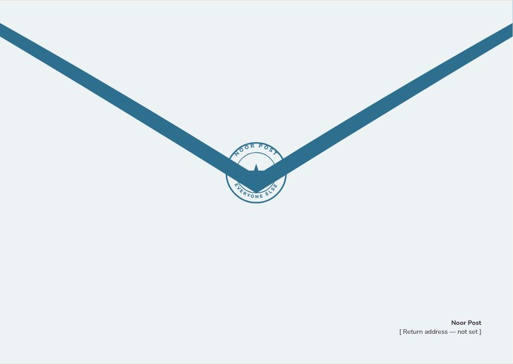
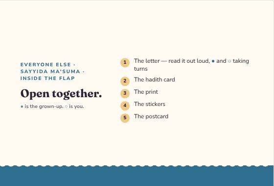
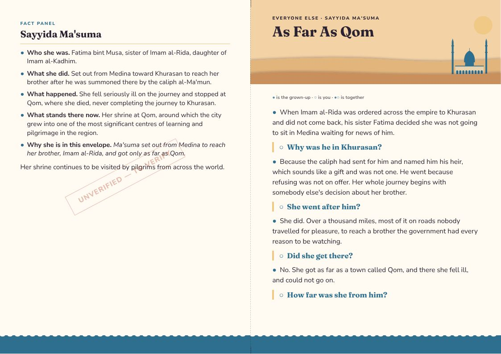
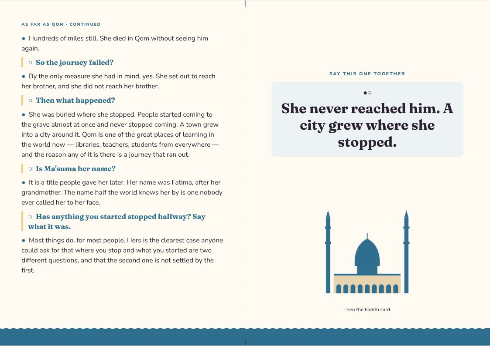
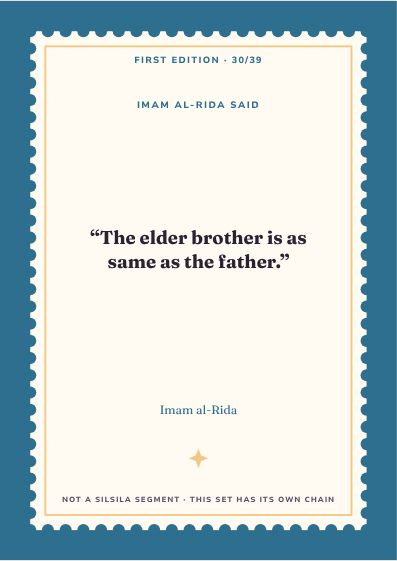
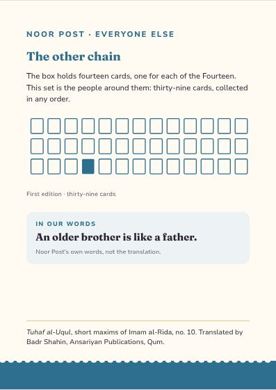
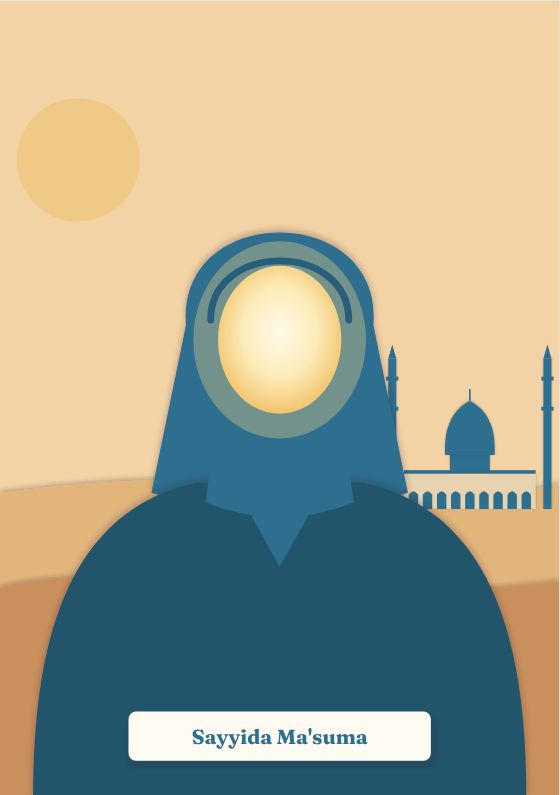
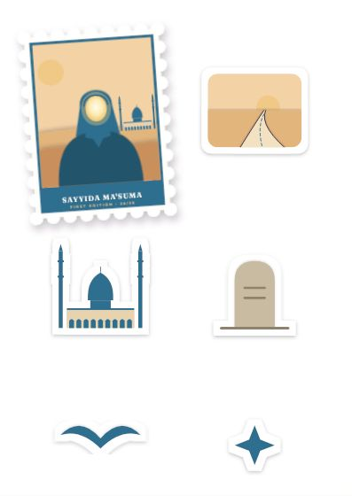
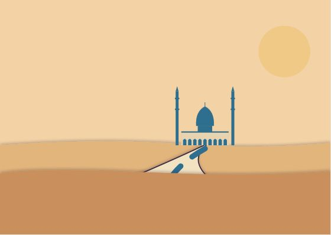

Everyone Else
Sayyida Ma'suma
Ma'suma set out from Medina to reach her brother, Imam al-Rida, and got only as far as Qom.
Inside the flap
Open together.
- The letter — read it out loud, ● and ○ taking turns
- The hadith card
- The print
- The stickers
- The postcard
● is the grown-up. ○ is you.
As Far As Qom
● the grown-up · ○ the child · ●○ together
●When Imam al-Rida was ordered across the empire to Khurasan and did not come back, his sister Fatima decided she was not going to sit in Medina waiting for news of him.
○Why was he in Khurasan?
●Because the caliph had sent for him and named him his heir, which sounds like a gift and was not one. He went because refusing was not on offer. Her whole journey begins with somebody else's decision about her brother.
○She went after him?
●She did. Over a thousand miles, most of it on roads nobody travelled for pleasure, to reach a brother the government had every reason to be watching.
○Did she get there?
●No. She got as far as a town called Qom, and there she fell ill, and could not go on.
○How far was she from him?
●Hundreds of miles still. She died in Qom without seeing him again.
○So the journey failed?
●By the only measure she had in mind, yes. She set out to reach her brother, and she did not reach her brother.
○Then what happened?
●She was buried where she stopped. People started coming to the grave almost at once and never stopped coming. A town grew into a city around it. Qom is one of the great places of learning in the world now — libraries, teachers, students from everywhere — and the reason any of it is there is a journey that ran out.
○Is Ma'suma her name?
●It is a title people gave her later. Her name was Fatima, after her grandmother. The name half the world knows her by is one nobody ever called her to her face.
○Has anything you started stopped halfway? Say what it was.
●Most things do, for most people. Hers is the clearest case anyone could ask for that where you stop and what you started are two different questions, and that the second one is not settled by the first.
●○She never reached him. A city grew where she stopped.
Letter, reverse
SAYYIDA MA'SUMA
●Who she was. Fatima bint Musa, sister of Imam al-Rida, daughter of Imam al-Kadhim.
●What she did. Set out from Medina toward Khurasan to reach her brother after he was summoned there by the caliph al-Ma'mun.
●What happened. She fell seriously ill on the journey and stopped at Qom, where she died, never completing the journey to Khurasan.
●What stands there now. Her shrine at Qom, around which the city grew into one of the most significant centres of learning and pilgrimage in the region.
●Why she is in this envelope. Ma'suma set out from Medina to reach her brother, Imam al-Rida, and got only as far as Qom.
Her shrine continues to be visited by pilgrims from across the world.
Hadith card · First Edition 30 / 39
The elder brother is as same as the father.
Tuhaf al-Uqul, short maxims of Imam al-Rida, no. 10 · trans. Badr Shahin
A saying of Imam al-Rida, matched to family, and the road toward it.
The design
Everyone Else — one style for the line
Every companion envelope shares one style, so the thirty-nine belong together: each front carries its person as a stamp. Every item at true size → · Print PDF



















The artwork fixes composition, colour and medium for every item; final illustration is still to be commissioned. The fact panel is still to verify.